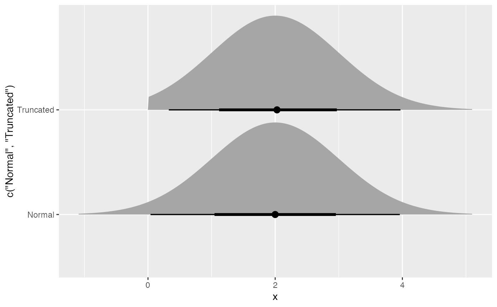

![[Stable]](figures/lifecycle-stable.svg)
Note that the samples are generated using inverse transform sampling, and the means and variances are estimated from samples.
dist_truncated(dist, lower = -Inf, upper = Inf)Arguments
Examples
dist <- dist_truncated(dist_normal(2,1), lower = 0)
dist
#> <distribution[1]>
#> [1] N(2, 1)[0,Inf]
mean(dist)
#> [1] 2.055248
variance(dist)
#> [1] 0.8864519
generate(dist, 10)
#> [[1]]
#> [1] 2.1621732 3.3083188 3.0817260 0.7065375 2.0303042 3.7647483 2.1657272
#> [8] 0.2440622 1.5245082 3.0246564
#>
density(dist, 2)
#> [1] 0.4082296
density(dist, 2, log = TRUE)
#> [1] -0.8959256
cdf(dist, 4)
#> [1] 0.9767203
quantile(dist, 0.7)
#> [1] 2.544133
if(requireNamespace("ggdist")) {
library(ggplot2)
ggplot() +
ggdist::stat_dist_halfeye(
aes(y = c("Normal", "Truncated"),
dist = c(dist_normal(2,1), dist_truncated(dist_normal(2,1), lower = 0)))
)
}
